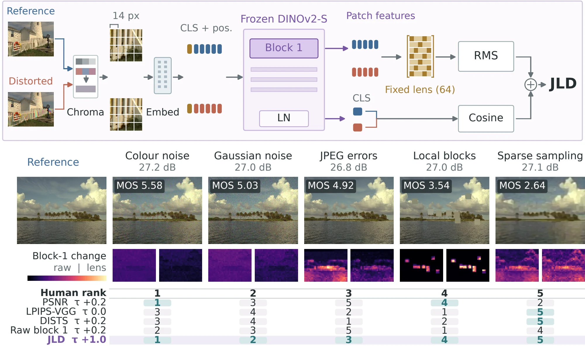
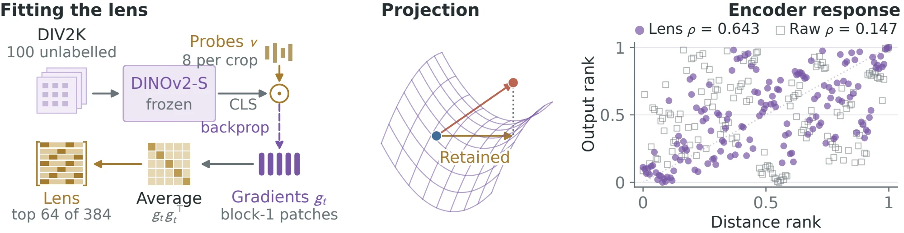
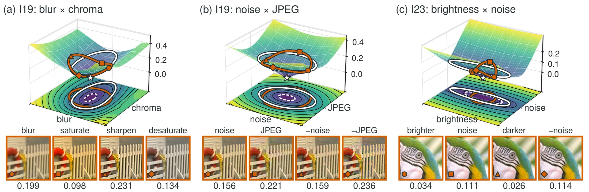
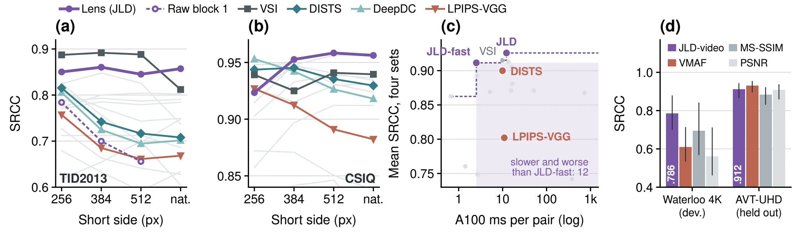

Abstract
Image compression, restoration, and generation all require a way to measure how different two images look to a person. Pixel error ignores how people see, while the most accurate perceptual distances are typically fitted to human judgments, tying them to a fixed data and resolution. For example, when image resolution is doubled, the correlation of DISTS with human scores on TID2013 drops from 0.815 to 0.717. We introduce the Jacobian Lens Distance (JLD), which derives its perceptual geometry from a frozen vision encoder rather than from human labels. JLD combines the locality of early patch features with the perceptual sensitivity captured by later encoder representations. Specifically, we use the encoder Jacobian to identify directions in the early feature space that most strongly affect the encoder output, producing a fixed metric tensor, \(\mathbb{E}[J^\top J]\), which we call the Jacobian lens. The lens is fitted only once from 100 unlabeled images, taking about 35 seconds. Locally, this construction defines a pullback metric in pixel space, giving JLD a clear geometric interpretation that can be directly analyzed on real images. Across four standard perceptual databases, JLD achieves state-of-the-art performance and consistently outperforms LPIPS, DISTS, PieAPP, and DreamSim. JLD is also robust to changes in image resolution, on TID2013, its lens-term correlation remains nearly unchanged when the resolution is doubled, decreasing only from 0.850 to 0.845. We further introduce JLD-fast, which is 4× faster than LPIPS-VGG while achieving a mean correlation of 0.911. Finally, JLD naturally extends to video, reaching a correlation of 0.786 on Waterloo IVC 4K compared with 0.611 for VMAF.
Motivation
Codecs are tuned with perceptual measures, and restoration and generative models are trained and evaluated with them. Pixel error (MSE, PSNR) is simple and differentiable, but it treats every pixel change alike, and people do not. The five distortions in the figure above differ by less than 0.4 dB in PSNR and span human scores from 5.58 down to 2.64. Across all TID2013 pairs with equal PSNR, PSNR picks the image people prefer in 51.1% of cases. JLD does so in 79.9%.
Deep feature distances such as LPIPS, DISTS, PieAPP and DreamSim close much of that gap by fitting network features to human judgements. The fit ties them to the data and the resolution they were fitted on. When TID2013 is rescored at twice the resolution, from 256 to 512 pixels, the Spearman correlation of DISTS with human scores drops from 0.815 to 0.717, and LPIPS-VGG drops from 0.757 to 0.661. Label-free alternatives built on learned densities, such as IEM, keep a principled geometry but cost far more to evaluate: 725.7 ms per pair for IEM at 256 × 256, against 12.2 ms for JLD at 512 × 384.
The paper asks one question: does a network that has only learned to see already contain a useful perceptual distance? It does, but not at any single depth. In a frozen DINOv2-S, early patch tokens keep local image structure yet weight all 384 feature directions equally, including many the network output barely responds to (0.784 SRCC on TID2013). The output tokens know which changes matter but have pooled away the spatial detail (0.742). Keeping the early features and weighting their directions by their effect on the output raises the correlation to 0.850, and it stays there as resolution grows.
Method
JLD compares two aligned images with one frozen encoder, DINOv2-S (ViT-S/14). At each of the \(N\) patch positions it reads the token \(\mathbf h_t(x)\in\mathbb R^{384}\) after block 1 of 12. The final class token \(\mathbf z(x)\) is the output whose sensitivity defines the metric.
The Jacobian \(J_t(x)=\partial\mathbf z(x)/\partial\mathbf h_t(x)\) says how a small change to one patch token moves the output. Averaging its squared response over images and positions gives a single matrix:
Its eigenvectors order the feature directions by how strongly the output responds to them. The top \(k=64\) of them, \(\mathbf U_k\), form the Jacobian lens. They carry 76.5% of the trace of \(\mathbf M\). The lens is a property of the encoder alone: one matrix, shared by every image, position and resolution.


A fixed pre-filter \(R\) first blurs the chroma channels (Gaussian, σ = 2 pixels) and leaves luminance untouched, following the lower spatial acuity of human vision for colour. The distance is then
The lens term measures where and how strongly the image changed, patch by patch, along the directions the encoder is sensitive to. Its per-patch values are the maps shown on this page. The output term picks up whole-image changes, such as a global colour shift, that are spread too thinly over patches to dominate the lens term. Scoring takes two forward passes, has no learned parameters beyond the frozen encoder and the fixed lens, and is differentiable.
The lens term is a pseudometric: non-negative, symmetric, zero on identical images, and it obeys the triangle inequality. Near an image it becomes a quadratic form in pixel space, the pullback of the lens through the encoder, so its local shape can be predicted and checked on real images. The figure below does that on three planes of distortion.


Variants. JLD-fast keeps the pre-filter and the lens term but stops the encoder after block 1, which cuts the cost per pair from 118.5 to 10.7 GFLOPs. JLD-video applies the same construction to a frozen VideoMAE-Base: a 16-direction lens on block 2, fitted on 50 unlabelled clips.
Results
- 0.926mean SRCC over TID2013, CSIQ, LIVE and KADID-10k test, the highest of 17 distances
- 90.0%of 699,534 same-reference human choices matched, also the highest
- 0.850 → 0.845lens-term SRCC on TID2013 from 256 to 512 pixels
- 2.5 msper pair for JLD-fast on an A100, 4.3 times faster than LPIPS-VGG
We compare JLD with 15 full-reference distances under one protocol. LIVE, the KADID-10k test references and PIPAL validation are held out. CSIQ and the KADID development references select the settings, and TID2013 informs the pre-filter. No human label enters the lens fit.
| Method | GFLOPs ↓ | ms ↓ | TID2013(diag.) | CSIQ(dev.) | LIVEtest | KADID-10ktest | Meanfirst four | PIPALval |
|---|---|---|---|---|---|---|---|---|
| Learned deep distances, fitted to human judgements | ||||||||
| LPIPS-VGG | 240.6 | 10.9 | 0.670 | 0.883 | 0.932 | 0.724 | 0.802 | 0.612 |
| DISTS | 240.7 | 9.9 | 0.818 | 0.943 | 0.954 | 0.885 | 0.900 | 0.704 |
| PieAPP | 385.7 | 16.5 | 0.844 | 0.897 | 0.918 | 0.864 | 0.881 | 0.706 |
| DreamSim | 212.2 | 51.3 | 0.812 | 0.911 | 0.910 | 0.851 | 0.871 | 0.759 |
| Distances not fitted to human judgements | ||||||||
| PSNR | <0.1 | 1.4 | 0.687 | 0.809 | 0.873 | 0.673 | 0.760 | 0.255 |
| SSIM | 0.2 | 2.7 | 0.627 | 0.837 | 0.910 | 0.621 | 0.749 | 0.363 |
| MS-SSIM | 0.3 | 5.1 | 0.786 | 0.913 | 0.951 | 0.826 | 0.869 | 0.491 |
| FSIM | <0.1 | 22.8 | 0.851 | 0.931 | 0.965 | 0.853 | 0.900 | 0.468 |
| VSI | <0.1 | 9.9 | 0.895 | 0.940 | 0.949 | 0.876 | 0.915 | 0.450 |
| GMSD | <0.1 | 2.6 | 0.804 | 0.957 | 0.960 | 0.849 | 0.893 | 0.585 |
| NLPD | <0.1 | 15.6 | 0.799 | 0.937 | 0.937 | 0.811 | 0.871 | 0.370 |
| DeepWSD | 60.2 | 13.5 | 0.855 | 0.959 | 0.955 | 0.882 | 0.913 | 0.460 |
| DeepDC | 326.4 | 16.1 | 0.816 | 0.954 | 0.950 | 0.900 | 0.905 | 0.751 |
| LASI | 0.3 | 377.6 | 0.522 | 0.840 | 0.883 | 0.723 | 0.742 | 0.581 |
| IEM† | 4,999.1 | 725.7 | 0.810 | 0.917 | 0.922 | 0.821† | 0.868† | 0.182† |
| Ours, label free | ||||||||
| JLD-fast | 10.7 | 2.5 | 0.875 | 0.956 | 0.945 | 0.870 | 0.911 | 0.578 |
| JLD | 118.5 | 12.2 | 0.877 | 0.971 | 0.964 | 0.892 | 0.926 | 0.624 |
Spearman correlation with human ratings (higher is better) and cost per pair, measured on an A100 with 512 × 384 inputs (IEM at 256 × 256). Bold marks the best distance in a column and underlining the second. † IEM results come from subsets of 2,032 KADID and 250 PIPAL pairs.
Agreement with human judgements
JLD has the highest mean SRCC of all 17 distances, 0.926, ahead of VSI (0.915), DeepWSD (0.913), DeepDC (0.905) and DISTS (0.900). It exceeds every learned deep distance on all four datasets and is first or second on each. On individual decisions, JLD places the image people prefer closer to the reference in 90.0% of 699,534 same-reference pairs, ahead of DeepDC (89.4%) and DISTS (88.4%). Among the 24,623 pairs whose PSNR differs by less than 0.25 dB, where PSNR is at chance (48.7%), JLD agrees with people on 76.0%, DISTS on 74.4% and LPIPS-VGG on 65.3%.
The gain comes from which directions the lens selects, not from how many it keeps. All 384 raw block-1 features give a four-set mean of 0.772, and 64 random directions give the same value. 64 PCA directions reach 0.851 and the 64 lens directions reach 0.905. The chroma pre-filter and the output term raise the mean to 0.911 and 0.926.
Resolution, cost and video


Resolution. From 256 to 512 pixels the lens term stays at 0.850, 0.860 and 0.845 on TID2013, while the unweighted block-1 features it is built from fall from 0.784 to 0.656, DISTS from 0.815 to 0.717 and LPIPS-VGG from 0.757 to 0.661. On CSIQ the lens rises from 0.923 to 0.958, the highest of the 15 methods at 512 pixels.
Cost. JLD-fast keeps a mean of 0.911 at 2.5 ms per pair, 4.3 times faster than LPIPS-VGG (10.9 ms) and 4.0 times faster than DISTS (9.9 ms). Only PSNR is faster, and only VSI and DeepWSD score higher, at four to five times the cost. Full JLD takes 12.2 ms.
Video. On the 240 Waterloo IVC 4K pairs, which are used to choose the block and rank, JLD-video reaches 0.786 SRCC, against 0.694 for MS-SSIM, 0.611 for VMAF and 0.562 for PSNR. On 120 held-out AVT-VQDB-UHD-1 pairs it reaches 0.912, within 0.020 of VMAF (0.932), which is trained on human video scores.
Other encoders. Fitting a lens to each of 14 frozen encoders, ViTs and CNNs from DINOv3 to CLIP and VGG16, improves over raw features from the same block for all 14.
Limits
JLD inherits the limits of its encoder. It is weaker on restoration and GAN outputs (0.624 on PIPAL, below DISTS, PieAPP, DreamSim and DeepDC) and on global contrast changes (0.378 on TID2013). The lens term ignores displacements in the 320 discarded feature directions, so using it as a training loss needs care. Full JLD is slower than DISTS; the fourfold speed advantage belongs to JLD-fast. On held-out video JLD-video trails VMAF by 0.020. Inputs must be spatially aligned.
Examples
Six pairs of distortions of the same reference, each pair at nearly equal PSNR. People rate A higher in all six. The map under each image shows where the lens term responds. The cases were chosen to study disagreements between measures and include two that JLD gets wrong, so they say nothing about average accuracy.
Maps show the per-patch lens displacement after the chroma pre-filter. The JLD score also includes the output term, which has no map. MOS scales differ between TID2013 and KADID-10k. Scores · selection rules and provenance
Lens maps over time
Image JLD applied frame by frame to two encodes of the same clip from AVT-VQDB-UHD-1. Pick a scene and step through twelve frames. These maps use the image lens on single frames, without the output term. They are separate from JLD-video, which uses a VideoMAE encoder.
Brighter regions have a larger local feature response. They are not human-annotated distortion masks. Clip scores pool 12 frames at 448 × 252. Frame records
JLD-video on Waterloo IVC 4K
Four clips, each shown as reference, A and B side by side. People rate A higher in all four. JLD-video agrees on three, where VMAF does not, and misses the game clip.
Selected disagreement cases, not a random sample. Scores describe the complete evaluated clips; the players show four-second excerpts. Clip and score provenance
Use it
from jld import JLD
metric = JLD.pretrained("full") # or "fast"
distance = metric("reference.png", "distorted.png") # lower means more similarInstall from the repository with git clone https://github.com/shreshthsaini/jld && cd jld && uv sync. The fitted lens ships with the package, and the DINOv2-S weights download on first use. Inputs can be file paths, PIL images, arrays or tensors, and metric.map(ref, dist) returns the per-patch map. The repository also contains the script that fits a lens to a new encoder, and the evaluation scripts. The blog post walks through the idea in plain terms.
BibTeX
@article{saini2026jld,
title={JLD: Perceptual Distance through a Jacobian Lens},
author={Saini, Shreshth and Adsumilli, Balu and Wang, Yilin and Birkbeck, Neil and Bovik, Alan C.},
journal={arXiv preprint},
year={2026}
}